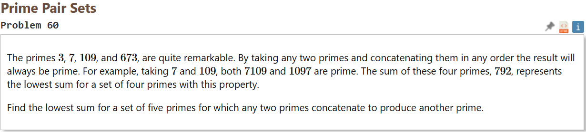

Project Euler
Project Euler is an online platform that offers a series of challenging mathematical and computational problems. Typically, solving an Project Euleur problem requires a mix of mathematical insight and efficient programming. Over the course of some months I have solved over 50 of these problems.
Example
Solving this problem took me a couple days. As is often the case with Project Euler, while it is technically possible to brute-force, your computer will have a memory-crash before it is able to solve it. So to solve this problem I had to use some properties of coprimes and ended up using my own (worse) version of Euler's totient function. Ofcourse with these problems, if you google or ask chatGPT you can find the answer online. But the fun is in finding the solution yourself.